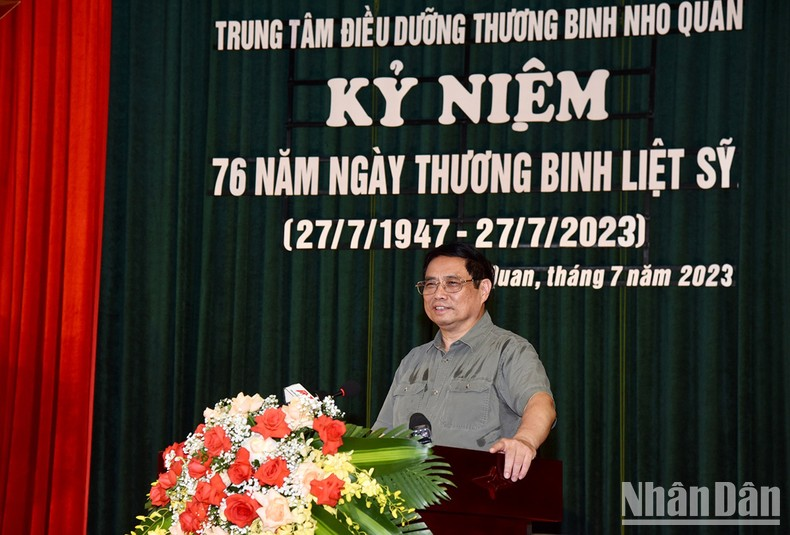
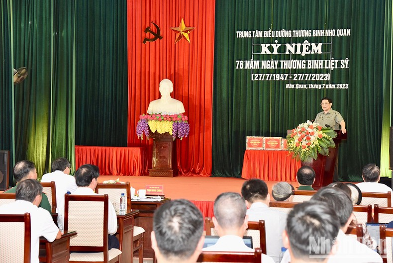
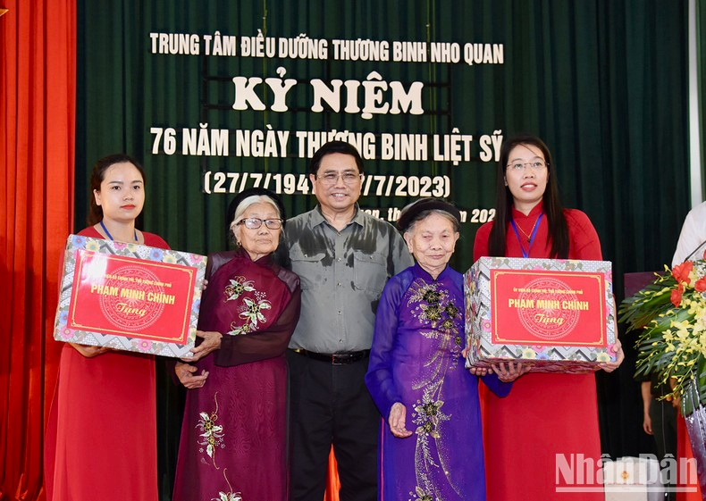
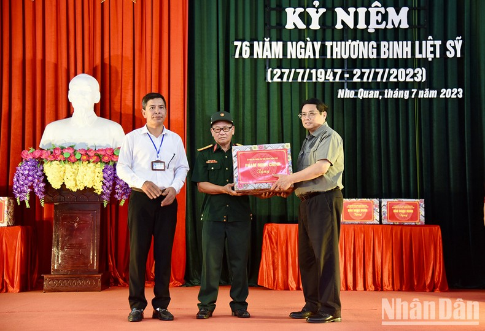

Trung tâm Điều dưỡng thương binh Nho Quan được thành lập vào tháng 6/1965, với tên gọi ban đầu là Trại điều dưỡng thương binh C. Trải qua các thời kỳ lịch sử với các tên gọi khác nhau, từ năm 2002 đến nay được đổi tên thành Trung tâm Điều dưỡng thương binh Nho Quan.
Với chức năng, nhiệm vụ được giao, tập thể cán bộ, viên chức và người lao động trong Trung tâm luôn thực hiện tốt đạo lý “Uống nước nhớ nguồn”, “Đền ơn đáp nghĩa”của dân tộc và phát huy truyền thống đơn vị Anh hùng Lao động trong thời kỳ đổi mới.
Trải qua quá trình xây dựng và trưởng thành, Trung tâm đã tiếp nhận, điều trị, nuôi dưỡng trên 2.000 lượt thương, bệnh binh nặng. Hiện tại, Trung tâm đang quản lý, nuôi dưỡng, điều trị phục hồi chức năng và thực hiện các chế độ chính sách cho 147 đối tượng, trong đó có 68 thương, bệnh binh của 22 tỉnh, thành phố trực thuộc Trung ương; 23 người hoạt động kháng chiến và con đẻ của người hoạt động kháng chiến bị nhiễm chất độc hóa học; 56 người là đối tượng bảo trợ xã hội có hoàn cảnh đặc biệt khó khăn mắc các bệnh về tâm thần.
 Thủ tướng Phạm Minh Chính phát biểu ý kiến tại buổi đến thăm.Cùng với công tác điều trị, chăm sóc nuôi dưỡng, Trung tâm thực hiện tốt các chế độ, chính sách của Đảng và Nhà nước cho thương bệnh binh và gia đình của thương bệnh binh.
Kết quả đạt được là các thương bệnh binh luôn yên tâm, phấn khởi, phát huy truyền thống Bộ đội Cụ Hồ, gương mẫu chấp hành tốt các chủ trương, đường lối, chính sách của Đảng, pháp luật của Nhà nước, quy định của địa phương và đơn vị, khắc phục khó khăn về thương tật, bệnh tật tích cực điều trị và rèn luyện đạt hiệu quả. Chính vì vậy, họ luôn coi Trung tâm thực sự là ngôi nhà của chính mình.
Do tính chất đặc thù, ngoài việc chăm sóc sức khỏe cho những người đang được nuôi dưỡng điều trị, hiện nay Trung tâm còn thay mặt thân nhân các gia đình thực hiện thờ cúng 89 phần mộ thương bệnh binh trong nghĩa trang của đơn vị, trong số này có nhiều đồng chí quê miền Nam chưa tìm thấy thân nhân. Khi về an dưỡng được Trung tâm đón nhận, chăm sóc nuôi dưỡng; khi từ trần được đơn vị thờ phụng.
Phát biểu ý kiến, Thủ tướng bày tỏ xúc động được đến thăm Trung tâm Điều dưỡng thương binh Nho Quan; nêu rõ, Đảng, Nhà nước luôn quan tâm người có công với cách mạng; chăm lo người có công với cách mạng, thương bệnh binh, gia đình liệt sĩ là trách nhiệm, công việc thường xuyên của cả hệ thống chính trị, toàn dân chứ không chỉ trong ngày 27/7; cấp ủy, chính quyền, nhân dân cũng thường xuyên quan tâm, tri ân sâu sắc nhất đối với những người đã cống hiến xương máu cho độc lập, tự do, dân tộc.
 Quang cảnh buổi gặp mặt, nói chuyện với các thương bệnh binh tại trung tâm.Thay mặt Chính phủ, Thủ tướng gửi tới các Mẹ Việt Nam Anh hùng các anh, các chị thương binh, bệnh binh đang được điều dưỡng tại Trung tâm lòng tri ân sâu sắc, lời thăm hỏi ân cần và những tình cảm sâu đậm nhất; gửi tới toàn thể cán bộ, công chức, viên chức, người lao động Trung tâm Điều dưỡng thương binh Nho Quan lời chào thân ái và lời chúc tốt đẹp nhất của lãnh đạo Đảng, Nhà nước.
Thủ tướng nêu rõ, chúng ta hết sức chia sẻ, tri ân sâu sắc về sự hy sinh, cống hiến này; những người trở về nhưng mang thương tích, bệnh tật hành hạ suốt đời.
Phát truyền thống tốt đẹp “Uống nước nhớ nguồn”, “Ăn quả nhớ người trồng cây”, trong suốt 76 năm qua, Đảng và Nhà nước luôn quan tâm lãnh đạo, chỉ đạo làm tốt công tác đền ơn, đáp nghĩa; ban hành, triển khai thực hiện hiệu quả nhiều chính sách đối với thương binh, liệt sĩ, người có công với cách mạng; đối tượng hưởng chính sách ưu đãi không ngừng được mở rộng, các chế độ ưu đãi từng bước được rà soát, hoàn thiện, bổ sung, phù hợp tình hình đất nước trong mỗi giai đoạn. Chúng ta luôn nghiên cứu thay đổi các chính sách phù hợp tình hình thực tế. Những chính sách này ngày càng được cải thiện tốt hơn.
Mới đây, ngày 21/7/2023, Chính phủ đã ban hành Nghị định 55 sửa đổi, bổ sung một số điều của Nghị định 75, theo đó mức chuẩn trợ cấp, phụ cấp ưu đãi người có công tăng thêm 26,5 %; đồng thời, sửa đổi, bổ sung một số quy định liên quan hoạt động của các cơ sở nuôi dưỡng người có công như: hỗ trợ cải tạo, nâng cấp, sửa chữa, bảo trì cơ sở vật chất; hỗ trợ thuốc, điều trị và bồi dưỡng phục hồi sức khỏe; hỗ trợ phục vụ công tác nuôi dưỡng, điều dưỡng, đón tiếp người có công; đời sống vật chất và tinh thần của người có công và gia đình người có công không ngừng được cải thiện; các phong trào “Toàn dân chăm sóc các gia đình thương binh, liệt sĩ và người có công với cách mạng”, Quỹ “Đền ơn đáp nghĩa”, “Nghĩa tình đồng đội” được các tầng lớp nhân dân nhiệt tình hưởng ứng.
 Thủ tướng Phạm Minh Chính tặng quà động viên hai Bà Mẹ Việt Nam Anh hùng.Thủ tướng cũng rất vui mừng khi biết đội ngũ cán bộ, bác sĩ, điều dưỡng tại Trung tâm đã không quản ngại khó khăn, vất vả, luôn tâm huyết với tinh thần trách nhiệm cao, ân cần chăm sóc, điều trị bài bản, khoa học và sẵn sàng lắng nghe, chia sẻ tâm sự của các thương, bệnh binh như “người thân của mình”; mang đến “những liều thuốc tinh thần”, xoa dịu nỗi đau chiến tranh.
Đặc biệt, Thủ tướng rất xúc động, cảm phục nhiều anh, chị thương binh, bệnh binh tuổi đã cao, sức khỏe giảm sút, gặp rất nhiều khó khăn trong sinh hoạt hằng ngày; nhưng bằng nghị lực, ý chí và bản lĩnh của người “Bộ đội Cụ Hồ”, tiếp tục “sống vui, sống khỏe, sống có ích”, lạc quan yêu đời, là tấm gương sáng cho thế hệ trẻ noi theo.
Thủ tướng khẳng định, quan tâm chăm sóc, nâng cao đời sống vật chất và tinh thần của thương binh, bệnh binh, gia đình liệt sĩ và người có công với cách mạng là chủ trương, quan điểm nhất quán của Đảng, Nhà nước ta, là đạo lý truyền thống tốt đẹp của dân tộc ta.
Với tinh thần đó, Thủ tướng yêu cầu Bộ Lao động-Thương binh và Xã hội và cơ quan liên quan cần thực hiện thật tốt chủ trương của Đảng, chính sách, pháp luật của Nhà nước, đẩy mạnh hơn nữa công tác chăm lo đời sống vật chất, tinh thần, chăm sóc thương binh, bệnh binh, gia đình liệt sĩ, người có công với cách mạng; rà soát, nghiên cứu, hoàn thiện và thực hiện tốt hơn nữa chính sách, pháp luật đối với người có công kịp thời, hiệu quả; phát triển sâu rộng các phong trào “Đền ơn đáp nghĩa”, “Uống nước nhớ nguồn”; huy động hiệu quả hơn nữa nguồn lực xã hội, chăm lo tốt hơn đời sống vật chất, tinh thần người có công; huy động nguồn lực, nghiên cứu tăng cường cơ sở vật chất, trang thiết bị của các Trung tâm nuôi dưỡng người có công; giải quyết các khó khăn, vướng mắc đối với hoạt động của các Trung tâm điều dưỡng thương binh trên cả nước nói chung và Trung tâm Điều dưỡng thương binh Nho Quan nói riêng.
Đối với Trung tâm Điều dưỡng thương binh Nho Quan, Thủ tướng yêu cầu xác định việc chăm lo các thương binh, bệnh binh là vinh dự, trách nhiệm, nghĩa vụ cao cả mà Đảng, Nhà nước và nhân dân giao phó, để các thương bệnh binh cảm nhận được tình cảm thật sự; quyết tâm nâng cao hơn nữa chất lượng công tác phục vụ, chăm sóc, nuôi dưỡng, điều trị, phục hồi chức năng và thực hiện “đúng - đủ - kịp thời” các chế độ chính sách đối với thương binh, bệnh binh và người có công với cách mạng, người có hoàn cảnh đặc biệt khó khăn; chú trọng giữ gìn cảnh quan môi trường xanh - sạch - đẹp; đảm bảo an toàn vệ sinh thực phẩm.
Thủ tướng mong các thương bệnh binh chia sẻ với Đảng, Nhà nước về những khó khăn hiện nay; nhấn mạnh, Đảng, Nhà nước luôn đặc biệt quan tâm, chăm lo đời sống người có công với cách mạng với tấm lòng, sự tri ân sâu sắc, trách nhiệm cao nhất; nêu rõ, trước đây, các thương bệnh binh đã phải chiến đấu với quân thù, giờ đây lại phải chiến đấu với bệnh tật nhưng lòng không nao núng, luôn lạc quan; mong các anh chị thương bệnh binh tiếp tục tô thắm thêm truyền thống "Bộ đội Cụ Hồ".
 Thủ tướng Phạm Minh Chính tặng quà động viên Trung tâm Điều dưỡng thương binh Nho Quan.Đảng, Nhà nước luôn lắng nghe các ý kiến để tiếp tục hoàn thiện chính sách, dành nguồn lực cho công tác chăm sóc thương bệnh binh, người có công với cách mạng, gia đình chính sách, Mẹ Việt Nam Anh hùng.
Thủ tướng đề nghị mỗi chủ thể liên quan cần đề cao trách nhiệm, hoàn thành trách nhiệm mà Đảng, Nhà nước, nhân dân giao phó; Trung tâm Điều dưỡng thương binh Nho Quan làm tốt chức năng, nhiệm vụ được giao.
Nhân dịp này, Thủ tướng đã tặng quà động viên Trung tâm Điều dưỡng thương binh Nho Quan, các thương bệnh binh, 2 Mẹ Việt Nam Anh hùng.